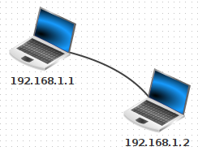
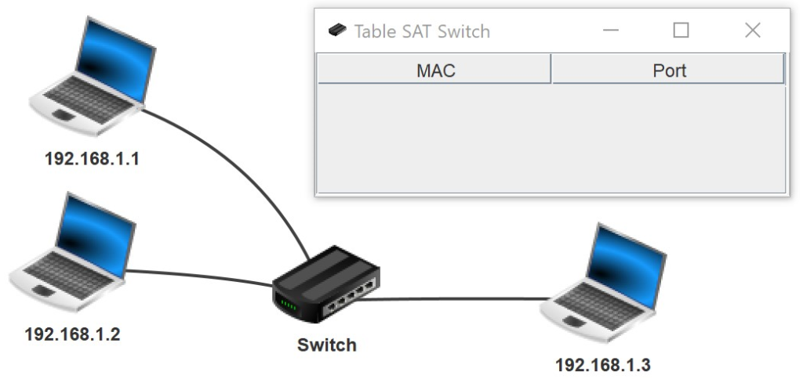
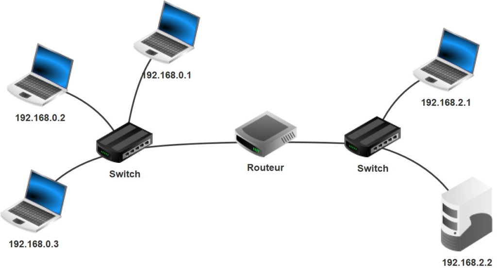
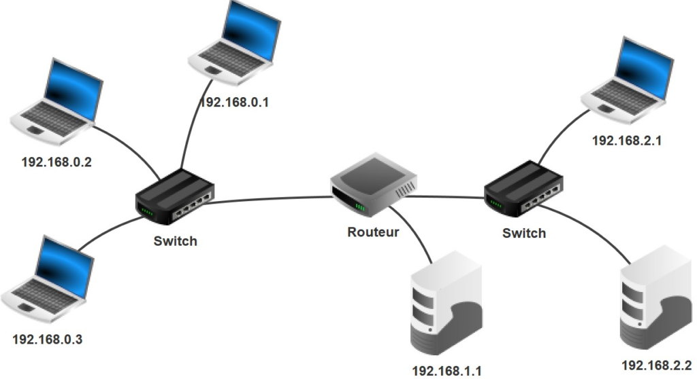
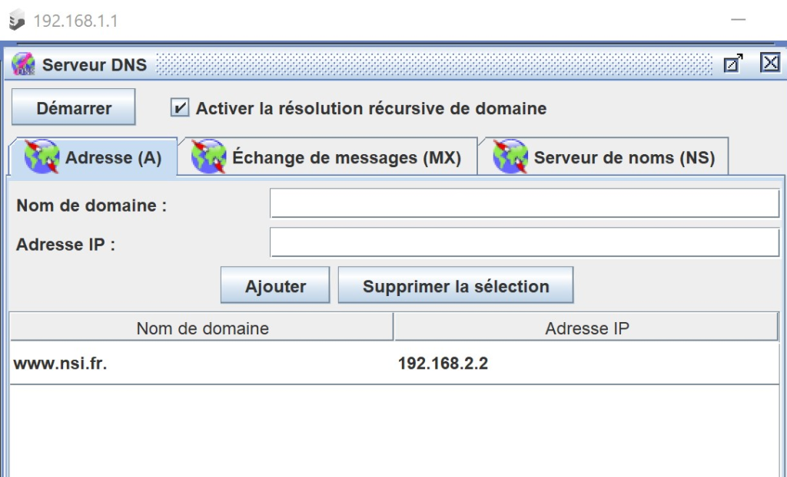

clic droit sur BOB, et afficher les échanges … en petite fenêtre (c’est juste pour voir qu’elle se remplit progressivement)
clic sur l’invite de commande
Lancer une salve de pings vers Anna : ping 192.168.2.1 et observer le passage de paquets
Observations :
Sur le 1er paquet = ARP : BOB demande au routeur son adresse MAC avec l’adresse MAC de broadcast FFFF..FF Le protocole ARP permet d’associer une adresse IP à une adresse MAC.
2ème
paquet : Cette fois, on remarque que les 2 @MAC sont renseignées …
comment le routeur a-t-il fait pour connaitre @MAC de BOB ?
Observer les alternances ping et pong.
Quelle est @IP destinataire ? C’est @IP de Alice (ok c’est cohérent) Qu’en est-il de l’@MAC destinataire, est-ce Alice ? ….
Puis on efface tous ces échanges : clic droit dans la table (zone verte) ou mieux encore recharger le fichier téléchargé.
2°) Chez BOB : navigateur internet
Se mettre en mode lecture (flèche verte).
clic droit sur BOB, et afficher les échanges … en petite fenêtre
clic sur le navigateur
Pour visiter le site web du serveur web, taper : 192.168.3.1 et observer le passage de paquets
Observations :
1er paquet = SYN : demande une connection TCP au serveur 2e paquet = SYN/ACK = synchronyze and acknowledgement : la poignée de main en 3 phases
4e paquet : BOB fait une demande GET de la page web
6e paquet : BOB reçoit le fichier HTML (un fichier texte)
8° paquet : BOB demande l’image et là ça va prendre plusieurs paquets !!
Puis ligne 22 : BOB demande à mettre Fin à la connexion TCP : la poignée de main en 4 phases.
3°) En changeant d’image :
Sur le serveur WEB :
Ouvrir son éditeur de texte et ouvrir le fichier index.html
Modifier le nom de l’image par : tux-ski.jpg
Sauvegarder
Chez BOB :
Actualiser la page WEB et observer
Recommencer avec une erreur dans le nom de l’image !
TP 2
durée = presque 2h.
Table ARP

1ère étape :
Sur Filius, réaliser le montage avec 2 ordinateurs. Dans les paramètres de chaque ordinateur, cocher la case « Utiliser l’adresse IP comme nom« .
Passer en mode simulation. Par un double-clic sur la première machine (192.168.1.1), ouvrir l’installateur de logiciels.
Installer la ligne de commande en la faisant passer à gauche avec
Ouvrir la ligne de commande (double-clic) et saisir l’instruction ipconfig
Saisir la commande arp à l’invite de commande.
Enregistrer ce montage dans un fichier (avant de faire des échanges).
2ème étape :
Effectuer un ping vers l’autre ordinateur, ex : ping 192.168.1.2
Saisir à nouveau la commande arp à l’invite de commande … Qu’est ce qui a changé depuis le ping ?
Faire un clic-droit sur la machine 192.168.1.1 et afficher les échanges de données. Repérer l’échange avec le protocole ARP .
Table CAM/SAT d’un switch

Reprendre le fichier précédent (vierge de tout échange).
Supprimer le câble (clic droit) et ajouter un switch (commutateur) et un
3e ordinateur.
Par un simple clic sur le switch, afficher la table SAT/CAM du switch (vérifier qu’elle est vide).
1er ping :
Installer la ligne de commande sur 192.168.1.1 et lancer un ping vers le 2e ordinateur .1.2.
Afficher à nouveau la table du switch. Qu’est ce qui a changé depuis le ping ?
Afficher les échanges du 3e ordinateur … Pourquoi a-t-il reçu une requête ARP ?A-t-il répondu à cette requête ARP ?
2ème ping :
Toujours depuis la ligne de commande de 192.168.1.1 et lancer un ping vers le 3e ordinateur .1.3 cette fois.
Afficher à nouveau la table du switch. S’est-elle encore enrichie ?
Afficher les échanges de ce 3e ordinateur … Pourquoi a-t-il encore reçu une nouvelle requête ARP ?A-t-il répondu cette fois ?
Routeur et passerelle
Réaliser ce nouveau montage utilisant un routeur à 2 interfaces. Bien noter que ce montage contient 2 réseaux : 192.168.0.0/24 et 192.168.2.0/24.

1ère partie / sans configurer le routeur :
En mode simulation (flèche verte), sur la machine 192.168.0.1, tester les connexions vers les autres machines avec la commande ping.
Quelles machines ne peuvent pas être atteintes par .0.1 ?
2ème partie / en configurant le routeur :
En mode construction (marteau), donner une adresse IP (du sous-réseau) à chaque interface du routeur. Par exemple : .254
tester les connexions vers les machines de l’autre réseau avec la commande ping. Le problème est-il résolu ?
3ème partie / En configurant aussi les ordinateurs :
En mode construction (marteau), renseigner la passerelle (gateway) de chaque ordinateur. Attention, chaque réseau possède sa propre passerelle !
Le problème est-il enfin résolu ?
Effectuer un traceroute (ligne de commande) de la machine 192.168.1.1 vers le portable 192.168.2.1.
Enregistrer ce fichier : on en a besoin pour la partie suivante.
Serveur DNS
Reprendre le montage précédent :

En mode conception (marteau), double-cliquer sur le routeur puis Configurer > Gérer les connections.
En
cliquant sur +, ajouter une troisième interface locale. Fermer la
fenêtre et se rendre dans l’onglet correspondant pour lui attribuer
l’adresse IP .254
Ajouter un nouvel
ordinateur et le connecter à la troisième interface fraîchement créée du
routeur. Attribuer l’adresse IP 192.168.1.1 à cet ordinateur (futur
serveur) et n’oubliez pas de renseigner l’adresse de la passerelle.
En mode simulation (flèche verte), ajouter un serveur DNS à ce nouvel ordinateur. Configurer ce serveur DNS en ajoutant, dans l’onglet Adresse(A), le nom de domaine www.nsi.fr à l’adresse IP 192.168.2.2 (l’autre ordinateur « tour » tout à droite).

Démarrer le serveur DNS : clic sur « Démarrer« .
En mode construction (marteau), configurer le champs DNS de tous les ordinateurs portables en précisant l’adresse IP du serveur DNS crée.
En mode simulation, effacer les échanges.
Effectuer un ping www.nsi.fr à partir de différentes machines du réseau (sur lesquelles on aura installé la ligne de commande).
Afficher
les échanges … Remarquer les 2 échanges UDP (aller-retour) vers le
serveur DNS 192.168.1.1 qui contiennent les 4 couches :
liaison de données : @ MAC
réseau : @ IP
transport : UDP, port 53, le TTL (time to live) en secondes.
application : requête DNS de www.nsi.fr
Serveur Web
On veut maintenant héberger nos pages web sur un serveur de notre réseau. Ce serveur devra être accessible par toutes nos machines, via l’URL www.nsi.fr. Nous choisissons donc la machine 192.168.2.2 (à droite) comme serveur web.
Sur le serveur 192.168.2.2 (à droite) :
Enregistrer le précédent réseau, comprenant le serveur DNS, sous un autre nom (ex : ServeurWeb.fls)
Passer en mode simulation (flèche verte)
Installer un logiciel de serveur Web et un éditeur de texte sur la machine 192.168.2.2 (à droite).
Démarrer le serveur web.
A l’aide de l’éditeur de texte (Menu Fichier / Ouvrir), ouvrir le fichier index.html qui est déjà dans le dossier webserver. Le modifier à votre guise et enregistrer.
Sur le client 192.168.0.1 :
Installer un client Web (navigateur web) sur la machine 192.168.0.1.
Démarrer le navigateur et saisir l’URL www.nsi.fr dans la barre d’adresse, pour envoyer une requête HTTP au serveur Web. La page d’accueil du serveur devrait s’afficher.
Activer l’affichage des données sur la machine 192.168.1.1 avec un clic-droit.
Au besoin, relancer la requête HTTP précédente (www.nsi.fr) à l’aide du navigateur puis analyser l’échange de données.
http vs https avec Wireshark
Pour voir si une transmission est chiffrée ou non, il faut un logiciel de capture de trames : Wireshark. Et Firefox (car Chrome refuse les connections non sécurisées).
Voici 2 pages de connexion, l’une est sécurisée (https) et l’autre ne l’est pas (http) :